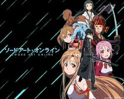
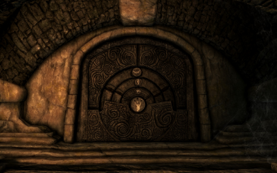
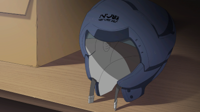
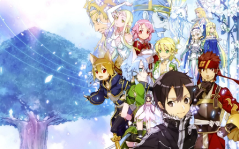
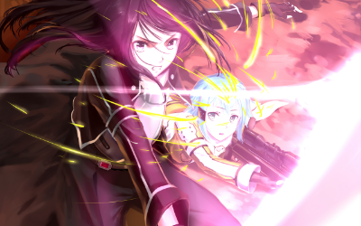
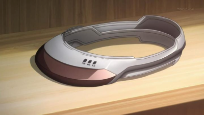
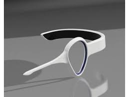
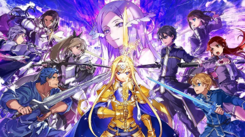

Sword Art Online (abreviado como SAO) es una serie de novelas ligeras japonesas escritas por Reki Kawahara e ilustradas por Abec.Se comenzó a publicar en abril de 2009 por la editorial ASCII Media Works, y se compone hasta diciembre de 2020 por 25 volúmenes
La historia se desarrolla en el año 2022, cuando un videojuego de rol multijugador masivo en línea de realidad virtual —VRMMORPG, por sus siglas en inglés (Virtual Reality Massive Multiplayer Online Role Playing Game)— llamado «Sword Art Online» acaba de ser lanzado. Allí, los jugadores pueden controlar sus avatares tal como lo harían con sus cuerpos reales por medio del NerveGear, un casco de realidad virtual capaz de estimular sus cinco sentidos a través de sus cerebros. Sin embargo, los jugadores se dan cuenta de que no pueden salir del videojuego; poco tiempo después, el creador de SAO, Akihiko Kayaba, aparece y les informa que si mueren en el mundo virtual también lo harán en el mundo real, así como les revela que para poder salir del juego primero deben superar los cien pisos del juego. A medida que los jugadores tratan de hacer frente a su situación, dos de ellos Kazuto Kirigaya y Asuna Yuuki, están decididos a ganar y ser libres.
Acción, videojuegos, aventura, ciencia ficción, drama, fantasía, romance.
FullDive: Tecnología de inmersión de Realidad Virtual completa utilizada para interaccionar entre el mundo real y los virtuales.
SAO: Abreviatura de Sword Art Online, título de la serie de novelas que comparte con el videojuego principal dentro de la trama del primer arco argumental de la serie, en el cual los jugadores quedan atrapados por más de tres años en el entorno de realidad virtual de Aincrad en la lucha por su propia supervivencia. 
Beater: Un término único para el primer arco argumental de SAO. Este es un acrónimo entre Beta tester (jugador que tuvo acceso previo a un videojuego antes de la venta al público de la versión alpha) y un Cheater (persona que se caracteriza por usar programas externos al videojuego, modificaciones del mismo o códigos para así finalizar el videojuego y/o derrotar más fácilmente a sus adversarios). Beater se utiliza como un término despectivo para personas que utilizan medios desleales para jugar, como el conocimiento previo de las mecánicas de jugabilidad y localización de objetos especiales dentro del mismo.
Clearer: Jugadores de élite dentro del videojuego, aquellos de mayor nivel que el resto de los jugadores. Se enfocan en la obtención de experiencia y el desarrollo de habilidades con el fin de 'limpiar' (clear) los niveles de Aincrad para así completar el videojuego. Ellos son vistos con gran respeto por su capacidad para combatir en el frente, que son las partes más peligrosas del videojuego. Sus números fluctúan entre unos pocos cientos de los seis mil jugadores que sobrevivieron después del transcurso de dos años y se considera muy raro verlos en los pisos más bajos.

Solo Player: Tipo de jugador que lucha por su cuenta con el fin de aumentar el nivel más rápido y/o para disminuir la dependencia de los miembros del equipo por las razones que sean. Existe lo que se denomina Risk vs Reward (Riesgo contra Recompensa) con los jugadores en solitario, ya que están en mayor peligro debido a que pelean sin apoyo de otros jugadores, pero de esta manera los puntos de experiencia y objetos son más abundantes al no distribuirse entre la compañía. Aunque despreciados por un gran número de jugadores en Sword Art Online por ser egoístas y negarse a hacer equipo con otros jugadores atrapados en Aincrad, casi todos aquellos que consiguen sobrellevar esa gran dificultad se encuentran en niveles mucho más altos que la mayoría de la población de los jugadores. El protagonista principal, Kirito, es de hecho uno de estos jugadores solitarios.
Dungeon: Significa literalmente ''calabozo''. Son áreas pequeñas dentro del juego que poseen características más difíciles que una zona de mapa normal (trampas, monstruos más fuertes, acertijos, etc). Suelen estar en los lugares más inesperados o recónditos. Estos lugares al ser completados dejan caer objetos o equipamiento raro más fuerte que el común, por esa razón los grupos grandes de jugadores suelen aprovechar estos sitios para hacerse más fuertes de una manera más rápida y eficiente. 
NerveGear: El primer dispositivo periférico producto de la tecnología FullDive (inmersión completa) utilizado para interaccionar con videojuegos de realidad virtual. De manera encubierta, Akihiko Kayaba introdujo en la programación de Sword Art Online la creación de "trampas" específicamente diseñadas sobre la conexión neuronal del usuario para impedir su desconexión voluntaria y así mantener a las personas atrapadas dentro del videojuego, matando así a los jugadores si obtenían un "Game Over" o si se detectaba alguna interferencia externa para retirar el dispositivo de la cabeza del usuario. Dichas trampas son desactivadas al vencer al enemigo final definitivo. 
ALO: Abreviatura de Alfheim Online, videojuego posterior a SAO, en el cual hadas de diferentes razas se enfrentan por llegar a la cima del árbol del mundo. En él se encuentran cautivos otros 300 jugadores para ser utilizados como sujetos de experimento de Sugō Nobuyuki. 
The World Seed: Un programa empaquetado creador de ambientes de realidad virtual. Creado por Akihiko Kayaba y confiado a Kazuto para que este decidiera sobre la base de su propio juicio que uso darle.

GGO: Abreviatura de Gun Gale Online, videojuego estadounidense con temática ciberpunk y de armas de fuego, donde la principal característica radica en la obtención de ingresos económicos reales al progresar en el videojuego, hecho que lleva a concentrar un gran número de jugadores profesionales y competiciones regulares en torneos por premios en efectivo.

AmuSphere: Segundo dispositivo periférico desarrollado sobre la base de la tecnología FullDive. Después del incidente ocasionado por el primer periférico Nervegear y por el videojuego Sword Art Online, este nuevo dispositivo fue elaborado con mejoras destinadas a mantener a los usuarios seguros, imposibilitando que se puedan reutilizar aquellos métodos para evitar otros casos como los de SAO.

Augma: Tercer dispositivo periférico de la trama que, a diferencia de sus predecesores, utiliza su tecnología para transmitir información mientras se esta despierto y crear una experiencia de realidad aumentada. Augma fue creado específicamente para el lanzamiento del videojuego de RMMORPG (Reality Massive Multiplayer Online Role Playing Game) llamado Ordinal Scale. Es posible entrar a videojuegos VRMMO debido a que el Augma contiene tecnología Full-Dive. 
Medicuboid: Dispositivo experimental de inmersión de Realidad Virtual completa creada por Akihiko Kayaba como tratamiento médico terapéutico contra enfermedades de pacientes en etapa terminal. Esta iniciativa se implementó posteriormente al lanzamiento del NerveGear y en simultáneo a SAO.
Underworld: Es un mundo creado por el Proyecto Alicization. Se basa en un mundo en donde las horas y los días que pasan adentro de ese mundo sean solo minutos afuera en el exterior y a diferencia de otros mundos de videojuegos de la serie, este en particular es un programa experimental del gobierno para recrear un mundo en donde el cuerpo y el alma estén conectados.
